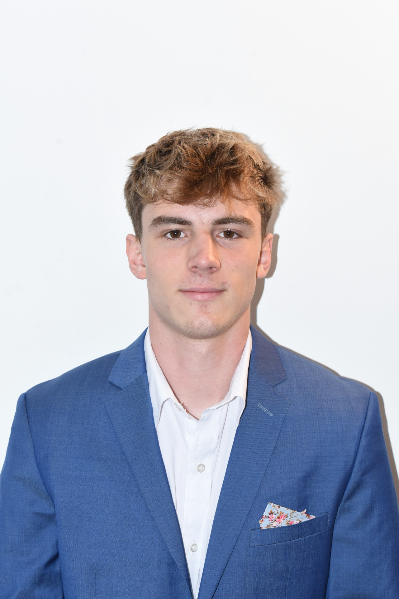

Spencer Hadlock
ECE student at Cornell University building hardware that thinks fast — FPGA design, RTL verification, embedded systems, PCB development, and digital communications.
Interests
Many of the habits I bring to technical work come from the outdoors and hands-on hobbies — patience, self-reliance, and a lot of iteration.
Backpacking & Camping
Multi-day trips that require route planning, gear selection, and adapting to changing conditions.
Rock Climbing
Technical movement and risk management. I climb personally and teach beginners through Cornell Outdoor Education.
Skiing
A favorite way to spend winter — terrain awareness, technical improvement, and exploration.
Slacklining
Balance, focus, and incremental improvement — a useful contrast to long stretches of technical work.
(all-time)
(all-time)
About
I'm a Cornell Electrical and Computer Engineering student interested in digital hardware, embedded systems, PCB design, and computer architecture. My background combines academic engineering, hands-on electrical construction, processor verification, robotics, and software development.
I enjoy projects that require both detailed technical reasoning and hands-on problem solving. I've worked on processor and memory-system verification, digital logic, embedded systems, PCB design, machine learning, digital communications, and autonomous robotics — and spent more than five years as an apprentice electrician, learning how designs become real installations.
Outside of engineering, I'm an Eagle Scout, a certified interior firefighter, and a climbing instructor. I'm particularly interested in FPGA, RTL, computer architecture, and embedded systems roles where careful engineering produces measurable real-world performance.
Education
Cornell University
Focused on digital hardware, embedded systems, computer architecture, signal processing, communications, machine learning, and electromagnetics. George & Marie Zahakos Scholarship recipient, 2023–2026. Spring 2026 term GPA: 4.047.
SUNY Westchester Community College
Graduated with Highest Distinction, one of six valedictorian candidates in a class of ~1,300. Phi Theta Kappa Honor Society. Built a strong foundation in mathematics, physics, chemistry, and programming before transferring to Cornell.
Experience
Course Development Intern
Built SystemVerilog integration testbenches for a single-cycle processor and its memory-bus and SPI interfaces, using positive, negative, reset, and timing-sensitive test cases. Diagnosed failures through waveform analysis and cross-module signal tracing, refactored a 63-module codebase used across four course labs, and built a submission workflow for ~120 students.
Electrical Subteam Member — Cornell Nexus
Design and integrate electronics for an autonomous robotic system. Contributed to five custom PCBs in Altium spanning power distribution, communication, sensing, and signal processing, coordinating requirements with mechanical and software subteams and supporting board bring-up and debugging.
Apprentice Electrician
Installed, upgraded, and troubleshot residential and commercial electrical systems for more than five years. Read drawings, followed NEC and local code, coordinated with general contractors and other trades, and programmed Lutron HomeWorks and RadioRA 3 automation systems using Designer Pro.
Projects
A selection of technical projects spanning RTL design, digital communications, machine learning, and full-stack development. Each links to a full write-up.
Direct-Mapped Cache RTL Design
A direct-mapped cache in SystemVerilog combining a combinational tag-comparison path for single-cycle hits with a finite-state machine that handles misses, memory requests, line refills, and metadata updates under a wait-based memory handshake. Verified with directed testbenches covering hits, misses, refills, and replacement.
OFDM Audio Communication System
An end-to-end OFDM modem transmitting digital data through speakers and microphones at approximately 70 kbps. The transmitter maps data into Gray-coded QAM symbols with adaptive per-subcarrier bit loading; the receiver handles frame synchronization, clock-skew correction, channel estimation, and equalization.
Multi-Label Digit Classification
A dual-output image-classification system that identifies two overlaid handwritten digits per image. Trained and compared CNNs, SVMs, and baseline approaches with data augmentation, cross-validation, and error analysis, reaching approximately 97% test accuracy.
Study Partner Matching App
A full-stack Android application that matches students with compatible study partners using schedule availability, course overlap, and study preferences. Built the backend data structures and API workflow, storing user profiles and schedules in a relational database and returning matches to the Android front end.
Skills
HDL & Digital Design
Programming & Data
Hardware & PCB
Engineering Tools
Let's build something.
I'm interested in full-time opportunities involving FPGA development, RTL design, embedded systems, computer architecture, PCB design, and hardware verification.